Hello, World
Ahmed Mahmoud
AI Automation Engineer & n8n Developer
I’m an n8n automation developer in Egypt. I build workflows for customer messages, support tickets, sales leads, invoices and daily reports, and I test each one before handing it over.
About Me
Designing and engineering reliable AI automation workflows that save people routine work.
I am an n8n developer. I design, build and test automation workflows for customer messages, support, leads, invoices and reporting.
My approach starts with understanding business requirements, identifying operational challenges, and designing the most effective automation architecture to solve them.
I specialize in building AI-powered workflows, AI Agents, business process automation systems, API integrations, Retrieval-Augmented Generation (RAG) solutions, and database-driven automation systems.
My latest work is five tested demo workflows (order status, support triage, real-estate leads, invoices, daily sales report) and Facebook Page comment and Messenger automation. The demos use synthetic data and a simulated backend, and each one has automated checks.
I focus on delivering complete automation solutions that solve real business problems rather than simply connecting tools or building workflows.
End-to-End Solutions
From the first conversation about the process to a tested workflow and a handover guide.
Multi-Industry Scope
Orders, support, leads, invoices, reports, and Facebook comments and Messenger.
Professional Focus Areas
Technical Skills
Organized across seven specialized categories covering automation platforms, AI agents, APIs, vector stores, and deployment infrastructure.
Automation Platforms
Core Orchestration EnginesProgramming Languages
Logic & ScriptingAI & LLM Technologies
Models & ReasoningAPIs & Integrations
Protocols & ServicesDatabases & Data Management
SQL, Vector & Cloud TablesPlatforms & Business Tools
Ecosystem IntegrationsDeployment & Infrastructure
Production Hosting & HealthSelected Projects
n8n workflows and AI agent builds. The five tested demos at the end are run against a simulated backend with synthetic data.
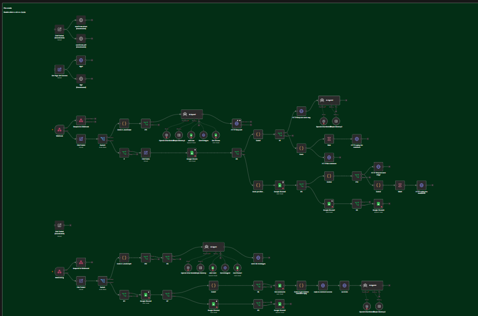
AI Social Media Comments Automation
An AI-powered automation system that handles incoming Instagram and Facebook comments, using AI agents to generate context-aware replies automatically.
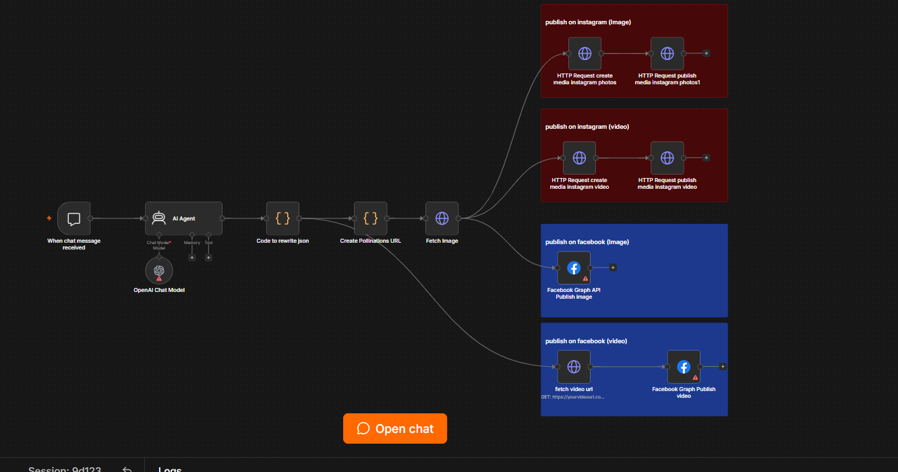
Social Media Automation
AI-powered content publishing automation for Instagram and Facebook, supporting both image and video publishing.
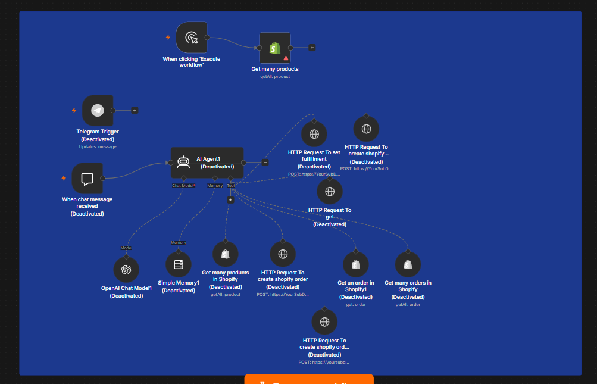
Shopify AI E-commerce Assistant
An AI-powered Shopify automation workflow designed to interact with products and store orders.
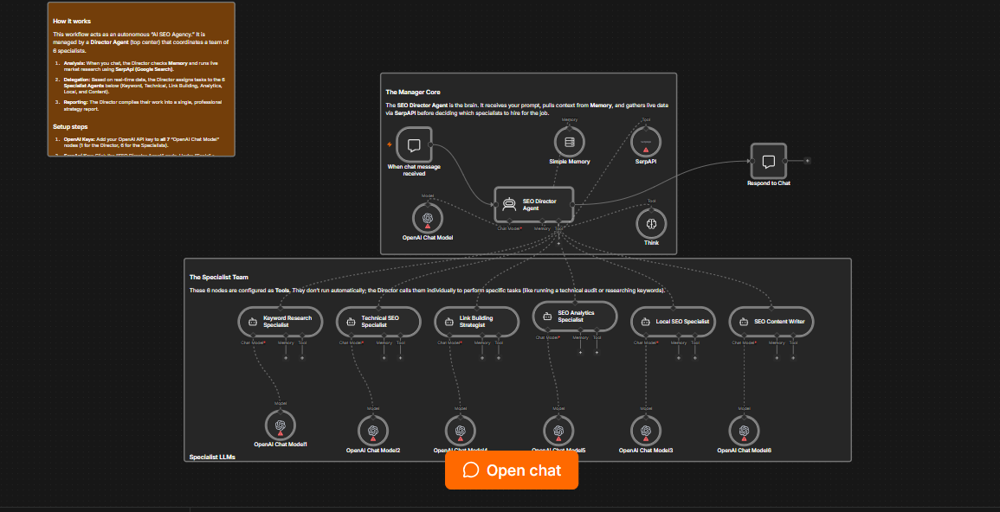
AI SEO Multi-Agent System
An SEO Director Agent coordinating specialized agents for keyword research, technical SEO, link building, SEO analytics, local SEO, and content writing.
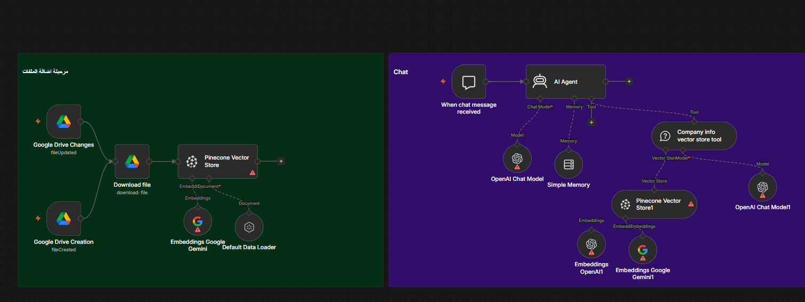
AI RAG Knowledge Base
A Retrieval-Augmented Generation system using Google Drive, Pinecone Vector Store, embeddings, and an AI chat agent to retrieve company information.
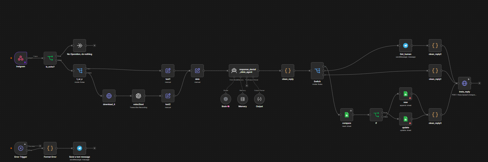
Dental Clinic AI Automation
An Instagram-based dental clinic automation system that processes incoming messages, handles voice transcription, uses an AI agent, and manages responses and data through integrations.
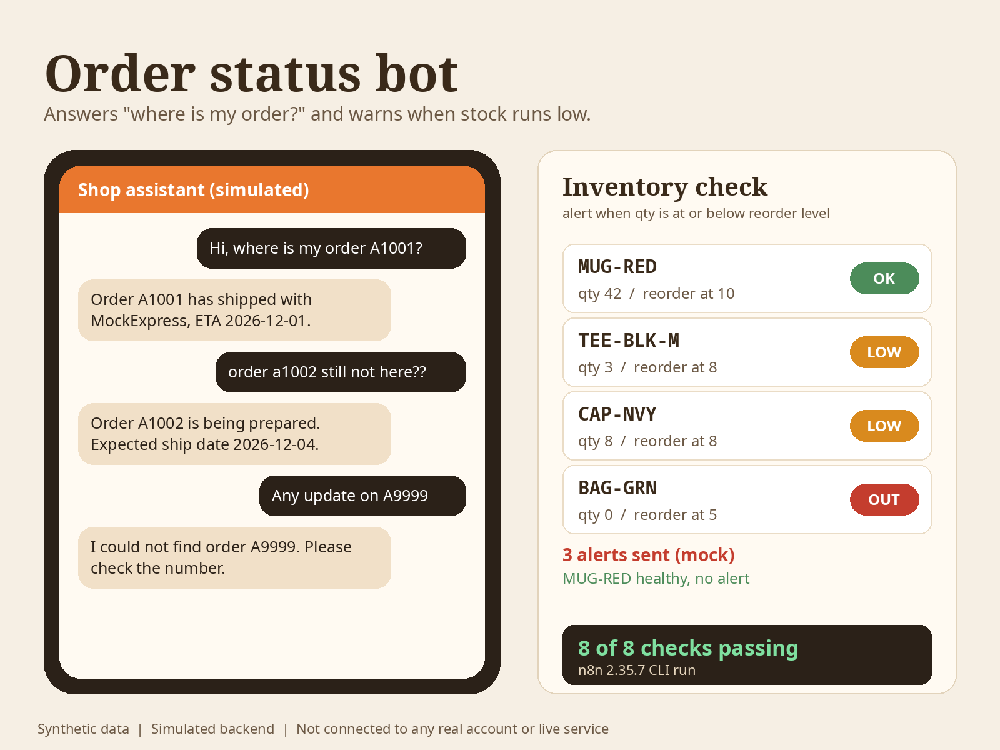
E-commerce Order Bot + Stock Alerts
Answers “where is my order?” with the carrier and ETA, and alerts when stock falls to its reorder level. Tested demo, 8 checks passing.
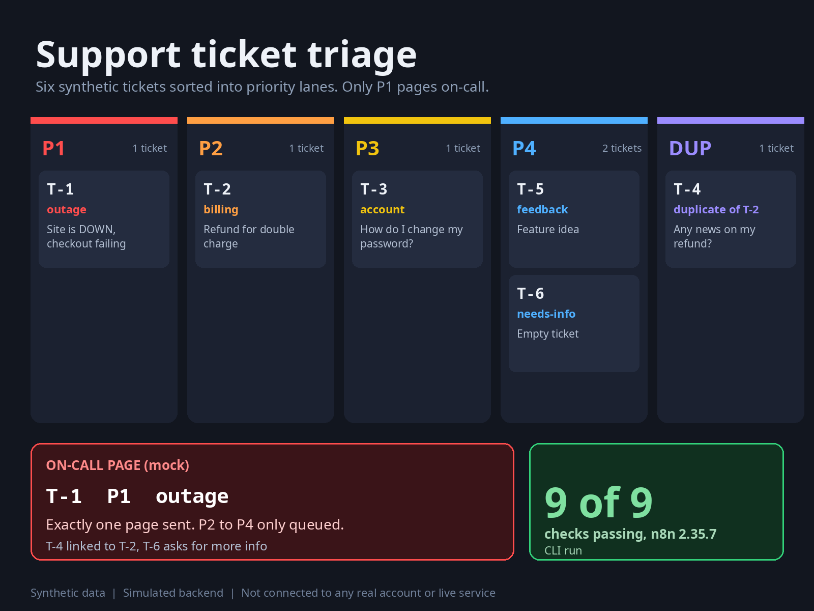
Support Ticket Triage Workflow
Sorts tickets by type and priority, links duplicates and pages the on-call person only for P1 outages. Tested demo, 9 checks passing.
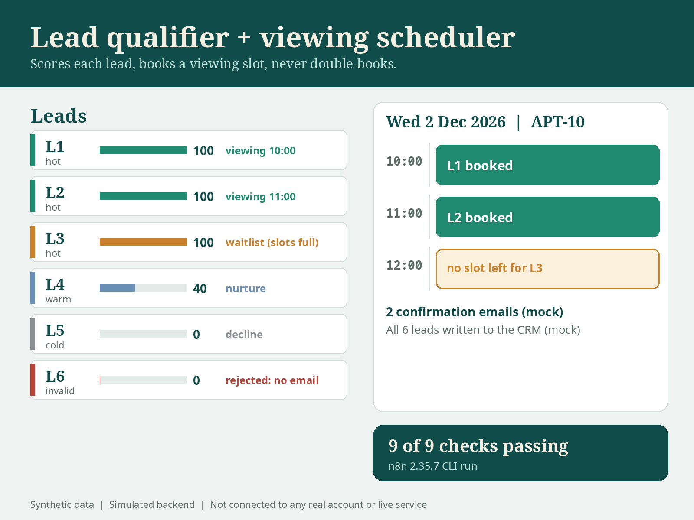
Real-Estate Lead Qualifier
Scores leads, books hot ones into free viewing slots without double-booking and waitlists the rest. Tested demo, 9 checks passing.
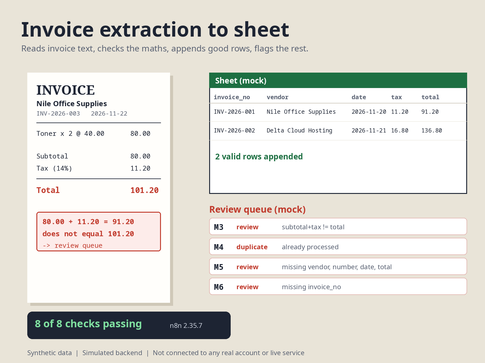
Invoice Extraction to Sheet
Reads invoice text, checks the total adds up and sends bad or duplicate invoices to a review queue. Tested demo, 8 checks passing.
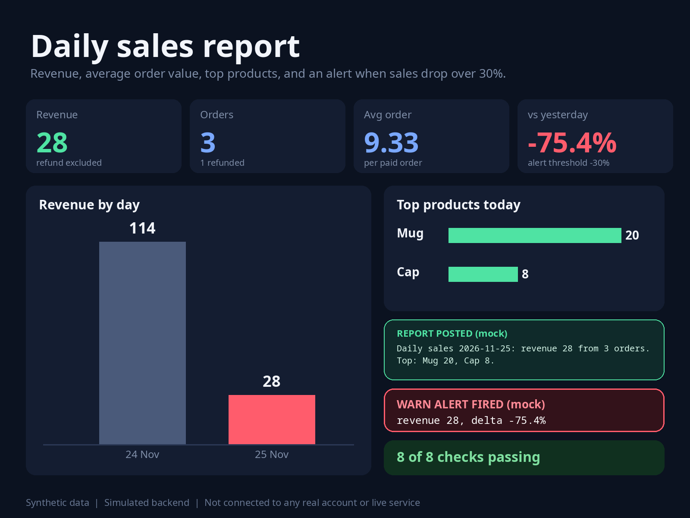
Daily Sales Report + Drop Alert
Posts a daily sales summary without refunds and alerts when revenue drops more than 30%. Tested demo, 8 checks passing.
Professional Services
Tailored engineering services focused on high-reliability automation, intelligent agents, and scalable business workflows.
AI Workflow Automation
Design and develop intelligent automation workflows using n8n and other automation platforms to reduce repetitive tasks and improve business efficiency.
AI Agent Development
Build AI-powered agents capable of understanding instructions, interacting with connected tools, and automating business and customer support tasks.
RAG & Knowledge-Based AI Systems
Develop RAG-powered assistants that retrieve relevant information from company knowledge bases and provide context-aware answers.
API Integration & Business Automation
Connect business applications and external services using REST APIs and Webhooks to create integrated automation systems.
"I want to keep building automations that cut repetitive work for small businesses, and to test every one before it goes live."
Let’s Connect & Collaborate
Available for remote, hybrid, or on-site opportunities in AI automation engineering, n8n workflow development, and intelligent agent systems.
Start a Conversation
Whether you have an upcoming automation project, need an n8n developer to take over routine work, or want to discuss full-time or contract roles, feel free to reach out directly.
Send a Direct Message
Fill out the form below to immediately open a pre-filled direct email inquiry.